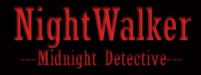
Content Warning: This work contains graphic content of violence, suicide themes, nudity, some sexual situations and age gap relationships.
Intro.
I´d figure I´d talk about this obscure 90s anime that is still very dear to my heart.
During the 2000s, after I watched Hellsing (Gonzo series) which I considered to be my very first “grown-up” anime that is not Sailormoon or Beyblade, I had a thirst for more mature shows and more vampires, with me going so far as discovering Buffy and Anne rice´s Vampire Chronicles. And also Yaoi for some reason.
And I´ve gotten my wish one day while surfing on the web, when I saw this cover.
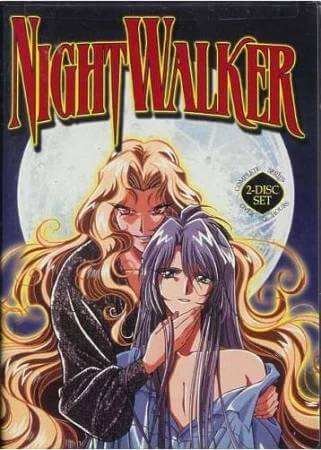
Initially, I thought this was gonna be a Yaoi series, I couldn´t be any more wrong. Despite my disapointment, this anime still turned out to be very entertaining. (To be fair the show does have some homoerotic elements, its just they´re not the main focus as advertised)
This show feels a lot like an anime version of Forever Knight or Angel, but I would describe it more as the noir version of Interview with the Vampire. Comparisons can also be made with the series Vampire Princess Miyu.
Premiering in the year 1998, and belonging to the supernatural noir genre and monster of the week plots, the series revolves around Shido a vampire private eye in search of redemption by solving cases involving a series of attacks by monsters called Nightbreed. He is joined by his partner Yayoi, a detective agent of a monster hunting organization who happens to be immune to vampire bites, Guni a tiny imp who serves as his familiar/sidekick and plucky Riho, his secretary.
Occasionall,y our detective here has encounters with Cain his sire and ex-lover who wants Shido to return to his old ways as a bloodthirsty vampire and back into his arms, and is planning something sinister.
Did I forget to mention it has a banger opening made by the Visual Kei band BUCK-TICK?

The Characters
Shido Tatsuhiko
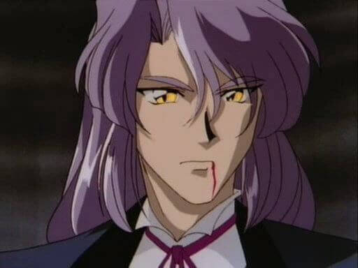
The handsome private detective with a tragic past. With Cain as his sire, he used to behave a lot like a traditional vampire, having no qualms on feeding and killing humans until tragedy as well his Sire´s arrogance made him rethink his own existence, and has since vowed to protect humanity from the forces of darkness.
Despite the sad backstory, he does stand out a little compared to similar protagonists, for example he has a more light-hearted personality, occasionally flirting and teasing Yayoi, while having a more serious atitude when the situation calls for it. He also cares deeply about his friends, who have become like family to him.
Interestingly enough, this way the show does a good of avoiding certain clichés when making your typical tragic vampire, by toning down on the angst a bit while having his past still have an emotional impact on the plot.
Not to mention, he does have a certain warmness to him, which was what attracted me to this character. Vampire anti-heroes from this era tend to be a lot how do I describe it aloof?
However, for some reason, I feel like he has some Louis Vibes to Cain´s Lestat? Or is it just me?
Yayoi Matsunaga
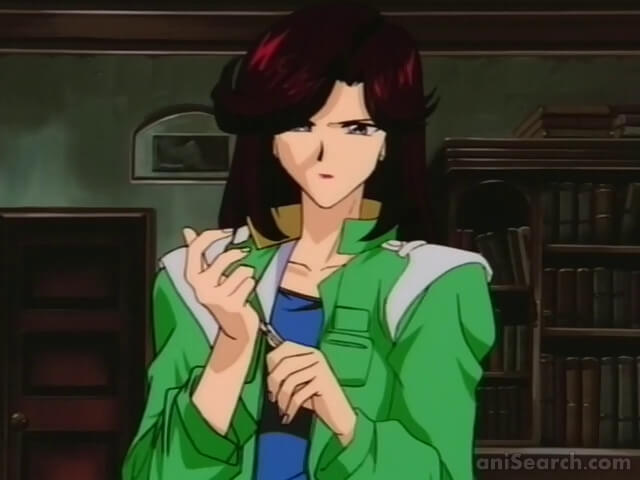
Shido´s partner in crime, and an agent who works for the government agency NOS, which allows her to provide Shido with cases, considering he´s the best man for the job.
However, this is done off the books since she´s working with a vampire.
She also serves as his blood donor, allowing Shido to feed without harming humans, it´s implied they are in some sort of romantic relationship.
We do eventually learn that Shido was the reason why she became a detective in the first place with him dealing with a case involving her sister.
In some ways she does does share some parallels with Shido, considering she too has done things in her past that she regrets, and is trying to redeem herself through her job.
I could also describe her as having a no nonsense assertive personality, and the chemistry between her and Shido is fun to watch.
Guni
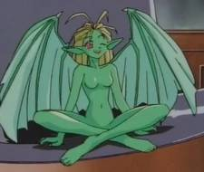
Guni is a imp or a type of Fairy, this small winged can br seen hanging around on Shido´s Shoulder, she plays the part of the cute sidekick/comic relief of the show with her snarky comments and constantly bickers with either Yayoi or Riho.
She sometimes helps the character during battles with the nightbreed by shooting lighting from her hands.
Riho Yamazaki
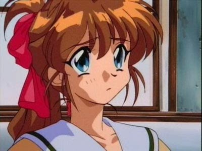
An orphaned high schooler who was taken under Shido´s Wing after her parent´s death at the hands of Nightbreed working as his secretary and eventually apprentice. At first, she has no idea that Shido is a vampire or what actually killed her family, but that quickly changes early on in the series.
She also has a bit of an unrequited crush on Shido.But you know what they say be careful what you wish for, she eventually gets turned into a vampire by Shido to save her life and in the finale it seems like Shido has finally accepted her feelings.
In terms of character roles she is the heart of the group, her sweet and innocent nature serving a constant reminder to Shido what´s at stake.
Like Guni, she provides some lighthearted moments in the show, and also get some cutesy scenes when she bonds with Shido.
I don´t have much of an opinion about Riho, except to say she´s your typical cute anime girl. To be fair, I was more invested in Shido other relationships, than with her.
Cain
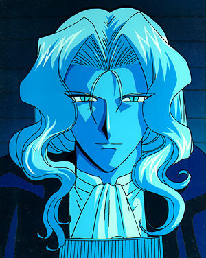
Shido´s cruel Ex and Sire. The main gist is that he and Shido used to be an item. After Cain managed to seduce Shido into a life of vampirism, they spent many years together terrorizing mortals, having sex, until Shido grew a conscience and has since left him on his own terms.
Cain is very self-centered, sees humans as nothing more than prey and cannot conceive why his own lover decided to leave him in favor of protecting the beings he once fed upon, relentless he will try anything to get Shido back, even if it means getting at his friends.
While I do find the dynamic between him and Shido fascinating as far as villain-hero relationships go (especially since they both were romantically involved) the show can be very inconsistent at times when it came to their past together, was it more consensual than it was leading on? or was it more forceful?
Although my theory is the inconsistencies are based on the fact that Shido barely remembers anything from his human life or that his own memories have been distorted from the guilt, or maybe mind control was involved, but still.
You know what, Cain in a way does fit a certain character role in a noir story, that of the Vamp to our Shido´s hardboiled detective role.
Game Origins
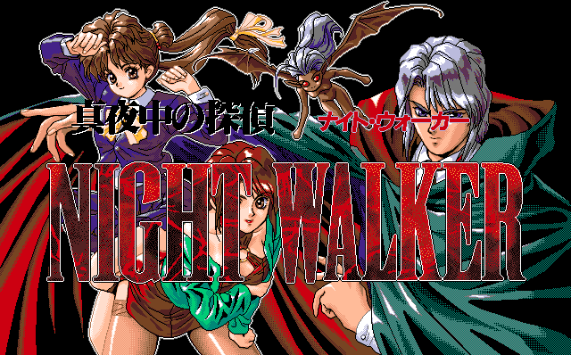
Fun fact, this anime is an adaptation of a hentai game (or eroge as they call it) for the PC-98 under the name Mayonaka no Tantei Night Walker, published in 1993. It´s pretty much an adventure game with detective elements, puzzles and a focus on character interaction.
In the game, you play as Shido solving a series of Supernatural Monster attacks at the St. Michael’s School for Girls in Yokohama city. Sadly, I haven´t managed to find any translation on how the rest of the story goes. The best I got from looking at the screenshots, was that I seems you find out that the school staff are part of some Dark cult, and have been sacrificing the students for a magic ritual.
Leading this ritual is Claire, a blond vampire woman, who at one point tries to seduce Shido, but he manages to destroy her in the end rescuing Riho who was about to become the next sacrifice, in a scene that is a little similar to the ending of episode 4, just ten times more gratuitous.
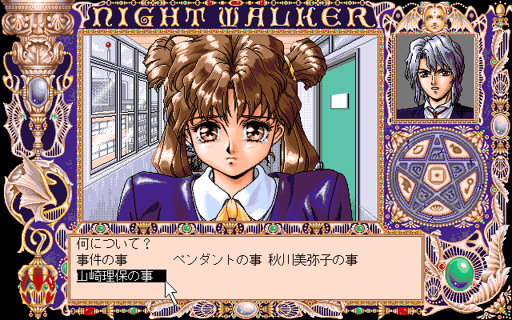
The story is so radically different from the anime they might as well be different stories, for one thing, the character´s backstories lack the angst of the original series, Shido being born a half-vampire instead of being turned, everyone´s family is still alive and there is no Cain (although, I suspect, Claire might be an inspiration since they share similar roles).
Heck, Shido is even more of a pervert in this compared to the Anime!Shido, who despite occasionally throwing some innuendo at Yayoi and acting all flirty, he is much more contained. He and Guni also provide plenty of comedic scenes during gameplay.
There´s also other differences in terms of content. The game is pretty much porn with mystery elements, while the anime focuses more on telling a proper detective story, and the sexier elements are far less explicit.
This type of adaptation is not all that unusual, for one they had to fuffill certain tv broadcast standards. Also, you would be surprised at the kinds of anime/manga that started off as erotica. For example, Hellsing, another vampire series, got its start as a one-shot hentai, before the creator decided to turn it into a proper action horror story.
Another interesting piece of trivia, as this may well be the first eroge-game to be turned into a full anime tv series.
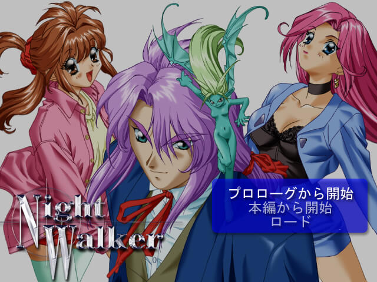
Eventually, it ended up getting a remake in 2000 for Windows, simply titled Night Walker.
They did some graphical upgrades as well as changing the designs of the characters to reflect their looks in the anime. Yet, they decided to make Yayoi´s hair pink, for some reason?
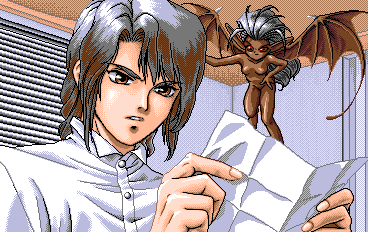
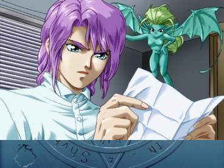
From OVA to Tv Syndication
Initially, the anime was meant to only be an OVA series with its four episodes before somewhere on the way they decided to expand on the story and syndicated it for television.
And oh boy, does it show, starting episode 5 there´s a decline in the animation quality, it shows some inconsistencies, like Shido´s backstory, the Golden Dawn arc for example has been abandoned with no conclusion, it also changed the dynamics between characters that were estabilshed in the first episodes.
And then there´s Cain.
Of all the character design changes (shido having longer hair, yayoi has black hair...) Cain´s had the most radical makeover.
And by makeover I really mean makeover, like did he decide to have some work done? Like he went:
From Vampire Dilf
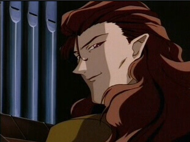
To Anime Lestat?
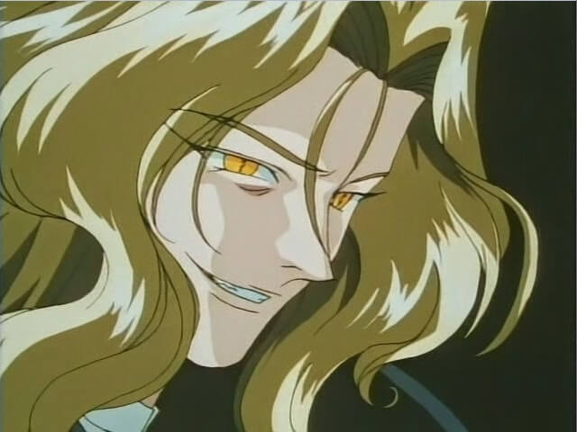
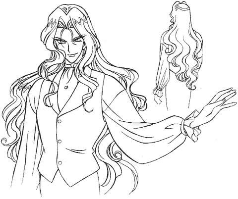
And there´s no canon explanation either, he just pops up like this and that´s what he looks like from now on, even in past flashbacks. Not that I´m complaining, while the first design isn´t that bad, I do prefer this new one.
That being said, when it comes to changes in tone, there is something amusing to watch the show go from mostly straight male gaze, to an increase in the level of homoeroticism between Cain and Shido.
They also took this opportunity to expand on the backstories of the main cast, from how they met, to Shido´s very first case. But your milage may vary on how well you like the episodes.
Thoughts on the Show
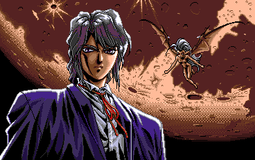
I would say the series does a pretty good job in paying homage to the detective noir genre, especially with the jazzy background music. Even the office resembles your typical gritty private eye space that you would often see in a lot of American detective movies, not to mention Shido's narration at certain points in the episode, like the hardboiled detective that he is.
You can also notice some Gothic horror influences that would make it fit in right at home in an Anne Rice novel. And aside from the inspiration it took from Interview With The Vampire, Shido also shares some similarities with Nick Knight.
All of this mixes well with the monster of the week formula, as the different stories always keep you guessing. Some episodes will even subvert what you know of the Nightbreed, and there´s at least one where the humans were villains of the piece.
One thing I enjoyed was seeing it make ample use of the story's location, most of the plot is set in the real city of Yokohama, with its infamous bridge being the background of important fight scenes.
But the real meat of the series is the relationships between the cast, I´m speacilly interested in the dynamic between Cain and Shido and how it affects the detective as a character.
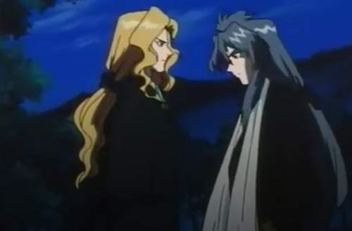
They do have somewhat of a troubled relationship as it serves as the main conflict of the show, and whenever they encounter each other it serves as a way to test Shido´s resolve in not giving in to his vampiric urges, and it also allows the audience to learn a little bit of his past.
And can I just say how refreshing it is to have a bi protagonist outside of the bl/yaoi genre, in a 90s anime?
As for the voice cast, I would say it´s full of talented voice actors, both the Japanese and English version.
While I do mostly prefer the show in the original language, The dub is not half bad, with Shido being voiced by none other than Richard Cansino.
The only complaint I have is Cain´s voice actor, while it´s passable, for some reason they decided to give him a stereotypical Romanian vampire accent, which can be corny and a little distracting at times.
Despite my enjoyment of the show, I do have a few choice criticisms, for one while the Cain thing is the main conflict, he doesn't show up himself a whole lot, and this is counting on the flashbacks.
And I wish the show could´ve come up with an episode showing properly the past of what led him to become a vampire in the first place, at least to deal with the inconsistencies, instead of mere flashes.
There´s also the final episode, I always thought this would fit better as a pre-final episode, while it is a very emotional episode, I think the last episode should have at least ended with a big final battle or something.
Aside from that this is definitely a series to add to your horror anime watchlist.
Nigthwalkers of Note
In the show Nightwalker refers to both Vampires and Nightbreed, creatures that walk the night, here´s a few I felt stood out. (spoilers ahead)
Phantom of the Opera
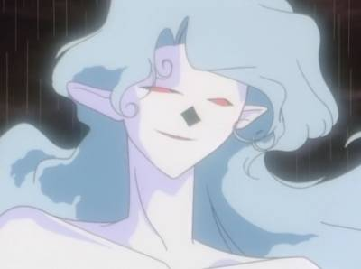
Appearance: Episode 2 - The Terms of Stardom
Info (Click to Expand)
This breed fancies herself a patron of the arts, often making deals with aspiring actors, providing them with beauty and talent in exchange for their body. (There is some sort of social commentary about the entertainment industry in there somewhere.)
However, as with most contracts with the Nightbreed, their hosts quickly find out it comes with a terrible price. They gain an urge to consume the blood and flesh of other beings, first it starts with animals, until they start going after humans.
The only to avoid this is for the human to give up the breed´s power of their own free will, which is easier said than done when you´re dealing with an actress who feels she must outshine her predecessor.
Looking closer, this breed does have a cool ghostly design, I guess you can say it´s a Phantom of The Opera? She can also grow claws, and can even weaponize her hair as tendrils to choke her victims with.
Possessed Cop
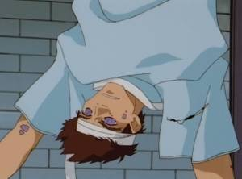
Appearance: Episode 3 - A Man on the Run
Info (Click to Expand)
Typically when a nightbreed possesses a human, it completely takes over making them nothing more than a monster.
But this episode purposes an interesting question, what if it were the other way around? What if instead humanity itself managed to take over a Breed´s instincts? That is exactly what happened to this one.
By possessing the body of a comatose cop this breed seems to have developed some human emotions towards the wife of his original host after she rescued him from our protagonists and nursed him back to health.
And then something wild happened, no matter how much danger he was in, he refuses to take a more monstrous form, to the point he even chose to die a human, instead of simply fleeing and seeking out a new body.
He may have also been an important key to bringing about the Golden Dawn, but since the show never did much with it, it didn't amount to much.
Still, it is a fascinating episode.
Nightwalker in Disguise
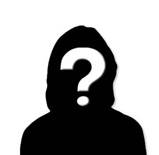
Appearance: Episode 6 – The Bottom of a Well
Info (Click to Expand)
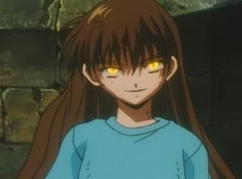
She counts as the first and only vampire in the show that is not somehow related to Shido.
When we first see her, this centuries-old vampire seems to behave no differently than a typical little girl.
But that disguise seems to have worked a little too well, as a Nightbreed takes her as hostage while running from Shido, then during the confrontation, all three of them end up trapped in the well for a couple of days. With her always maintaining her human charade till the end.
Throughout the entire episode, there are hints that something seems a bit off about her (Also let´s face a little kid all by herself at that time of night in a cemetery is a big giveaway).
Her modus operandi involves her letting herself be adopted by a human family every couple of years before leaving and disappearing into the night, as to avoid any suspicion.
As to why she didn't bother to reveal herself when she could just leave the well at any time? For the lulz. Look, even bored immortals have to find a to entertain themselves and pass the time.
The Face Stealer
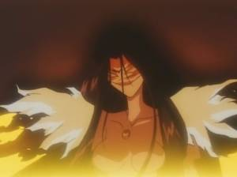
Appearance: Episode 9 – Someone Else´s Face
Info (Click to Expand)
Hey, looks like a flashback episode, and this time it´s Yayoi´s origin story. This episode shows how both she, Shido, and Guni all met.
It´s a tragic tale dealing with an estranged pair of sisters. When Yayoi and her sister Kasumi were little kids, they accidentally set the house on fire while trying to blow out a birthday cake without their parents' permission.
The accident not only killed their family but left Yayoi disfigured while her sister was left unharmed.
This was of course the action of a breed, who made a contract with Kasumi who merely wished for Yayoi to be saved no matter what happened to her, poor girl.
This created a rift between the two of them, while Yayoi still depended on her sister´s care, she has grown to resent her sister´s beauty while she remain a pariah, she even suspected that something was really wrong with Kausomi, while still dealing with her own sense of guilt.
This practicularly nasty breed enjoys possessing beautiful humans and has often gone out of its way to hunt other attractive women to steal their faces and then put them on display in the basement.
However, for some reason when the breed was destroyed alongside its host, Yayoi magically ends up with Kasumi´s face, now every time she look in the mirror it´s like her Sister is always with her. Shido mentions the whole two spirits living in the same body, thing although it could be metaphorical.
I´d argue this breed serves more as a plot device than a proper villain, with the relationship of Yayoi and Kasumi being the main focus of the conflict.
Guardian Angel
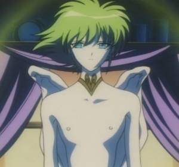
Appearance: Episode 10 - Tears of Angel
Info (Click to Expand)
Not all breeds look monstrous, some are even capable of taking on a beautiful guise to be able to manipulate humans better. This one has taken on an angelic form and is tied to a magic amulet. When a young girl finds him, he convinces her that he´s a Guardian angel and by performing a special ritual (well kissing mostly) he will grant her good fortune.
Of course, she gets what wants initially with her life going very well, but doesn't notice that she´s being slowly drained of her life forces. Also at point the “Angel” tries to kill the boy she has a crush on, whether is he doing out of jealousy or simply because he was afraid to lose his food source, or a bit of both is made ambiguous.
We do however find out that his true monstrous from, which look like a giant mix of a scorpion with a fish.
I always wondered is this episode was either simply exploring the themes of toxic relationships or simply making a point on this shallow society we live in which tend to judge people based on their appearance.
I do have to give points for creativity here, the breed´s own habits here are similar to that of an incubus, but avoid the cliché of having it look like a traditional demon.
The Witch
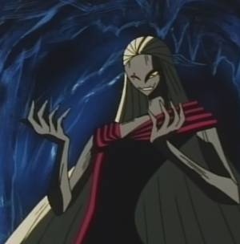
Appearance: Episode 11 - A Witch in the Forest
Info (Click to Expand)
This episode is set shortly after Shido decided to leave Cain and explores his very first confrontation with the Nightbreed. During one of his travels, he comes across a deserted village, with only one blind woman as its last remaining inhabitant.
She explains that there´s been a plague that wiped everyone out, she also mentions her fiance Schubeck who has gone to war and she´s been waiting for him ever since.
She of course made a deal with a Nightbreed to remain young and beautiful when he returned.
But the truth is far more horrifying, her love is never coming back due to her own actions as a monster, and has been living in denial. Let´s just say there is no happy ending here.
Looking back, episode 11 turns out to be one of my favorites of all the episodes for a couple reasons.
For one I love her wood scarecrow design, giving her a witch-like appearance. She´s also a reference to traditional witch lore, when one acquires her powers by making a deal with the devil.
The second is that we get to see more interaction between Cain and Shido, although he does play a much smaller role as an antagonist this time around, here it´s more of an enemy-mine situation.
I do love how it explores a bit more the differences between their respective philosophies when it comes to humans, or even dealing with the same type of situation, with Shido trying to take a more compassionate approach while Cain´s is a lot more ruthless.
I can see why their relationship ended the way it did.
The Nightmare
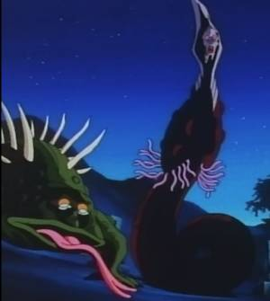
Appearance: Episode 12 - Eternal Darkness
Info (Click to Expand)
They are not actual Nightwalkers but hallucinations created by Cain himself to get back at Shido for leaving him. To do this, he took all of Shido´s fears and insecurities and wove them into a Nightmare.
The episode starts normal enough, Shido has finally come to terms with his own existence as a vampire thanks to Riho, and they have some discussion of the dynamics of their own relationship. At this point, Shido is still reluctant to even call it a romantic one.
However, their little bond session is interrupted by the news that Nightbreeds invaded a cemetery and possessed a pair of bodies. Whose bodies? Riho dead parent of all people.
The scene ends as well as you would expect, with Shido not having much of a choice but to destroy them.
And can I just say this is probably one of the more horrifying and saddest scenes in the entire show?
The animators have certainly gone of their way to make the Breed version of the parents as disturbing as possible with the dad having frog-like features and the mom looking like a giant eel with a ghastly-looking faceface.
And then there´s Nightmare Riho, oh boy.
During the nightmare, Riho traumatized by her parent´s second death, comes to resent Shido for not finding another way to save them and then leaves him.
Riho then takes a 180, becoming more cruel over time, no longer is she the sweet girl we´ve come to know in the show. She no longer values human life and can´t help but lash out at the people she once called family.
She also dons a new look looking even more vampiric and feral in the process.
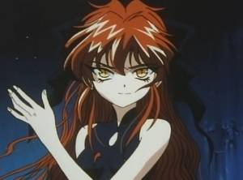
This fake version of her represents everything that Shido is afraid of, afraid of ending up like Cain, a fear of losing his loved ones, and even hurting Riho by not reciprocating back her own feelings for him.
All this is of course is all part of Cain´s Manipulation to get Shido to see the light, and back into his arms, which ironically for him it backfired.
And thus the series ends on a Positive note with Riho and Shido´s bond being even more stronger for it.
That being said, when I saw this episode for the first time, it was disconcerting to see the deaths of the main detective crew, especially when I didn't know how it was all gonna end. But it was just a dream, thank, god.
Trivia
Trivia 1: Takumi Yamazaki who plays Shido, has also acted in another vampire anime: Hellsing. Only this time he plays a vampire villain, Incognito.
Trivia 2: Turns out Hellsing has at least two Nightwalker actors in its cast. Hideyuki Tanaka who voices Cain, plays his complete oposite: Enrico Maxwell who hates vampires. He also plays D in Vampire Hunter D, Bloodlust.
Trivia 3: Yayoi drives a red Aston Martin DB7.
Trivia 4: Besides the famous Yokohama Bay Bridge, some of the other landmarks seen on the show are the Marine Tower, Chinatown and the Foreigner Cemetery.
Trivia 5: On othe other side, you have the english actress of Riho (Dorothy Elias-Fahn) who plays the main character from Vampire Princess Miyu between episodes 8-26. While Guni´s english actress (Sandy Fox) plays Kayo in Episode 7.
Trivia 6: It got an adaptation in the form of an audio drama and then eventually as manga and published in Monthly Dengeki Comic Gao!, sadly it´s considered lost media.
Trivia 7: Buck-Tick the band that created music for the show, not only were they considered the pioneers of the Visual Kei genre, but their songs were also used in two other vampire anime: Trinity Blood and Shiki.
Sources:
Mayonaka no Tantei Night Walker Game Gifs By Decadot (SFW)
Complete Game Screenshot Gallery on e-hentai.org (NSFW)
Nightwalker: Midnight Detective Episodes on KimAnime
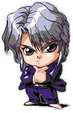
GO BACK
©Nightwalker and its respective characters belong to Ayana Itsuki, AIC, and Bandai Visual.